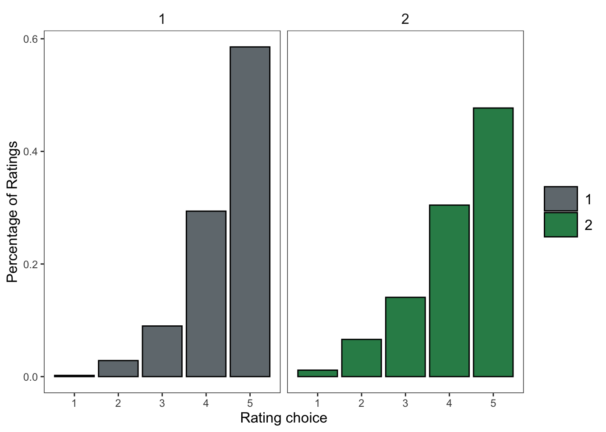
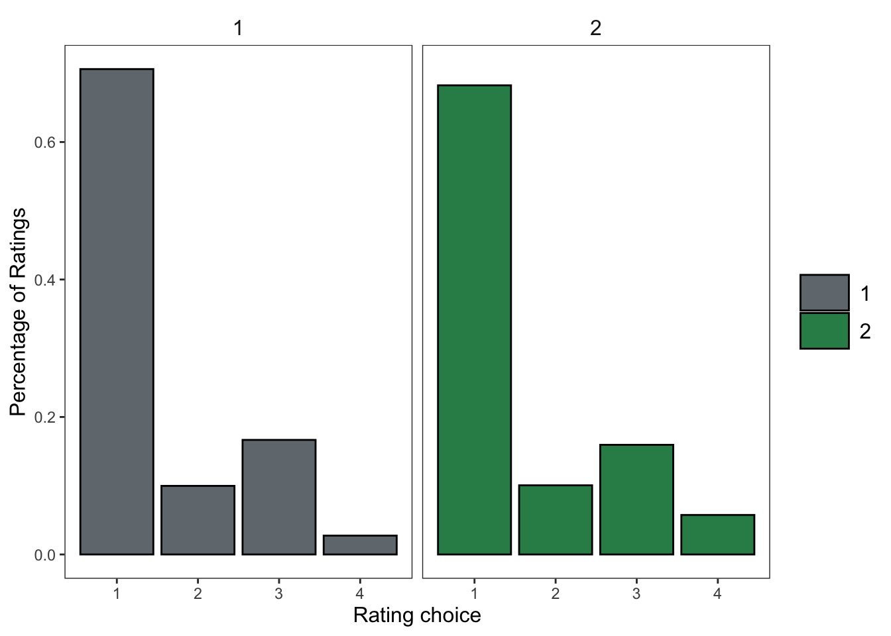
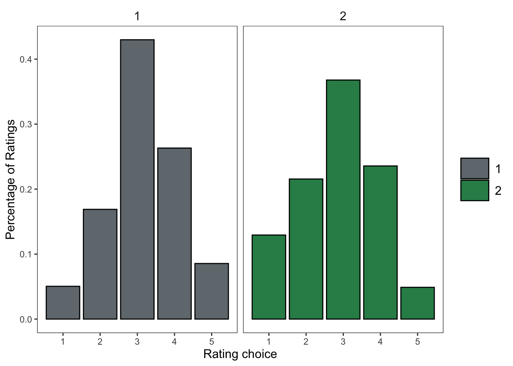

Survey initial analysis
Analysis
The analysis is broken into sections. The first concerns the most important 5 questions that should be directly affected by the lesson, followed by the remaining directly affected questions, semi-affected questions and ending with the least affected questions. The plots show the percentage of each rating for each question type (instead of total count since groups were unequal).
Most important 5 questions:
How much do you like the idea of being/becoming bilingual?
become_bilingual.1Even if the other person knows both languages, how rude is it to switch between languages in a conversation? (reverse coded)
codeswitch_rudeHow important is Spanish in the United States?
important_spanishHow valuable is it to be bilingual?
valuableHow important is it to not have an accent when speaking a second language? (reverse code)
no_accent
The rest of the directly affected questions:
Should all schools in the United States teach children to speak in more than one language?
schools_teachIs learning Spanish worth the effort it takes?
effortShould people learn another language even if they don’t plan on traveling abroad?
learn_not_abroadI don’t see this in the dataIs speaking or learning another language important to you because it will help you in your job or future career?
future_careerIs speaking or learning another language important to you because it will help you connect with people who speak that language?
connect_with_peopleAre multilingual people an asset to the United States?
multilingualism_assetIs it acceptable for people to be monolingual in today’s world? (reverse code)
acceptable_monolingualismI don’t see this in the dataDo you think you can become bilingual? become_bilingual
become_bilingual

Semi-affected questions:
How much smarter does knowing two languages make a person?
smarter_two_languagesHow much do you wish you started learning Spanish at a younger age?
started_youngerHow much do you admire people who speak multiple languages?
admire_multilingualsHow much do you like learning languages?
like_langaugesHow much interest do you have in learning a language?
interest_languagesHow much do you like Spanish?
like_spanishHow much do you like hearing Spanish?
like_hearing_spanishHow much do you like communicating with Spanish speakers?
communicating_spanish_speakersDo people who speak more than one language have a wider world view than monolinguals?
worldviewHow boring are Spanish classes? (reverse coded)
boring_spanish_classHow fun is studying languages?
fun_studying_languagesHow interesting is studying languages?
interesting_studying_languagesHow interesting do you find Spanish-speaking cultures?
interesting_spanish_culturesHow beautiful of a language is Spanish?
beautiful

Least affected questions:
How often are you excited to go to Spanish class?
excited_spanish_classHow often do you seek out ways to engage with Spanish outside of Spanish class and homework?
outside_engagementHow often is Spanish one of your favorite classes?
spanish_favorite_classHow difficult is it to learn Spanish in a language classroom? (reverse coded)
difficult_classroom_learningHow often are you excited to go to Spanish class?
excited_spanish_classHow often do you seek out ways to engage with Spanish outside of Spanish class and homework?
outside_engagementHow often is Spanish one of your favorite classes?
spanish_favorite_classHow difficult is it to learn Spanish in a language classroom? (reverse coded)
difficult_classroom_learning
